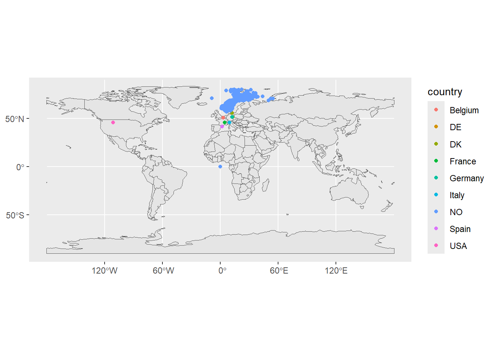

Code
sites <- read_or_write_parquet(
con,
"sites",
here::here("data", "sites.parquet")
)
environmental_con <- read_or_write_parquet(
con,
"environmental_con",
here::here("data", "environmental_con.parquet")
)Purpose: explore RADB’s sites table with a view to harmonisation.
sites18 cols x 29149 rows
| name | type | n_na | n_distinct | examples |
|---|---|---|---|---|
| site_id | numeric | 0 | 29149 | 64892, 65748, 73499, 67300, 72128, 81289, 76246, 72296, 83249, 59408, 82699, 76592, 72421, 60403, 81242, 67360, 73151, 59569, 77228, 77486 |
| site_code | character | 0 | 29149 | 006-54543, 164-38041, 156-111173, 02.61-89697, 044-44677, 03.61-100572, 002-95971, 02.60-107318, 072-40212, 012-29032, 012-81461, 02.61-84372, 01.10-56059, 04.22-86361, 03.03-111340, 03.61-92870, 02.81-106950, 04.03-108497, 04.20-86252, 01.30-93291 |
| site_name | character | 19 | 25817 | Kalhag, Ref, Reiraklakken, REI-1, Humla, HM-SED-E-1, Sireaana ved Akerhus (TVO-15), Visnesvatnet, Bear Island 07-2, Horten Indre havn, SK 9, Boerfjord, BOeR-REF, Tollaksholmen, TOL-5, Bjoernskjaeret - Slokkholmen, Mjogsjoeen, Bygdesundet, Hilderkleiva St 5, Hjortholman, st. 3, Hobbestad fyllplass (Nedenfor riksveien), Store Ljosvatnet, Aasefjorden-Holmeskjaervika slipp, Bekk ved Smila, Bergen havn GP24, Puddefjorden, Duesund, C3, Astafjord Tr St.2 |
| country | character | 25 | 18 | Germany, RS, France, ES, Belgium, BG, SK, HR, DK, Spain, HU, NO, RO, Italy, DE, AT, USA |
| area | character | 111 | 40 | Bjørnbærvika, Oslo, NMBU, Hasle, Oslo, West Flanders, Province of Barcelona, Barcelona, Kautokeino (Finnmark), Moholmen, Nedre Vats, Rogaland, Nes, Akershus, Lombardia Region, Time, Rogaland, Leipzig, Mainland Norway, Toraneskaia, Braanaasdalen, Taasen, Oslo, Grimstad, Aust-Agder, Craponne |
| latitude | numeric | 52 | 28958 | 70.0722500036945, 63.4135273099053, 60.7835800014194, 59.0628700013705, 60.751714939291, 60.3972907191026, 59.4632600014095, 59.9525000011384, 63.7352500004912, 59.8781600016839, 63.5323300086798, 67.1034200007533, 60.473407160669, 58.2929983182665, 58.0303700374623, 59.3966607181919, 64.1086133343685, 60.5592245632908, 59.43135113357, 62.3824240269406 |
| longitude | numeric | 52 | 28958 | 10.7586831173402, 10.2448299995259, 21.7954699987227, 9.06759923922288, 18.8708857057404, 7.96007779072141, 10.411072432319, 10.625858, 5.95322826678008, 16.5515726141343, 5.26998001116075, 4.91770001583853, 15.2905496402062, 9.39353999965799, 10.3217442968732, 8.3354000011606, 10.6131832149149, 23.6621832663181, 10.9831678072947, 7.99000000131628 |
| coordinate_system | character | 152 | 5 | WGS 83, WGS 84, WGS 84 (grader), WGS1984 UTM Zone 32N |
| altitude_value | numeric | 232 | 18 | 201, 136, 81.29, 81.25, 188, 225, 1420, 315, 0, 230, 205.2, 41, 300, 92, 285, 2025, 245 |
| altitude_unit | character | 232 | 3 | m, NR |
| entered_by | character | 0 | 16 | Max, CKM, HCT, RAS, LIX, SAW, MGJ/ASH, AR, KPE, RAW, MM, EGL, MST, TOH, KET, MCL |
| entered_date | POSIXct | 0 | 73 | 2021-02-25, 2016-04-12 14:08:50, 2021-02-28, 2016-04-12 14:04:23, 2019-12-04, 2023-06-08, 2023-11-17, 2019-03-06 15:01:56, 2016-10-23 09:09:51, 2021-02-26, 2017-05-03, 2021-03-23, 2022-03-16 15:06:54, 2016-06-03 11:59:00, 2021-02-24, 2016-07-13 23:48:16, 2016-08-24 10:55:10, 2016-10-23 09:09:56, 2018-01-09, 2024-01-05 |
| comments | character | 22 | 22 | “Case study”“Kaldvellfjorden”” (1639…, Test Multisource, The greenwall is located in a facade …, , Test, Multisource pilot sites, Multisource pilot sites, blank, not c…, “Case study”“Sorfjorden”” (16396 MIX…, “Case study”“Oslofjorden”” (16396 MI…, Multisource pilot sites, Blank (B) sa…, Multisource pilot sites, Used as a proxy for the country of No…, Multisource pilot sites (Blanks, dist…, , Converted from WG S84, Simulation, Undefined sampling location, Test EARTHRESQ, Converted from UTM Zone 32, Original site code (02.80.00.00.31-10… |
| status | character | 29149 | 1 | |
| dwh_validfromdate | POSIXct | 0 | 17 | 2023-01-17, 2021-06-25, 2021-09-07, 2024-01-04, 2024-08-26, 2024-02-22, 2022-04-17, 2019-12-04, 2022-03-16, 2019-11-06, 2024-02-28, 2019-05-02, 2024-02-23, 2023-10-06, 2024-08-29, 2021-03-29, 2024-02-09 |
| dwh_validtodate | POSIXct | 0 | 2 | 2999-12-31, 2099-12-31 |
| dwh_valid | numeric | 0 | 1 | 1 |
| rnum | numeric | 0 | 29149 | 6790, 6491, 19584, 18650, 618, 18289, 15034, 8529, 10265, 539, 25532, 13978, 3624, 23252, 19846, 22002, 15582, 23199, 23389, 23185 |
sites data integrity checksite_id, site_code, site_name?[1] TRUE[1] TRUE[1] FALSEenvironmental-conenvironmental-con:| site_id | site_code | site_name | country | area | latitude | longitude | coordinate_system | altitude_value | altitude_unit | entered_by | entered_date | comments | status | dwh_validfromdate | dwh_validtodate | dwh_valid | rnum |
|---|---|---|---|---|---|---|---|---|---|---|---|---|---|---|---|---|---|
| 109 | Novi Sad | NA | NA | NA | NA | NA | NA | NA | NA | TOH | 2014-11-25 11:29:08 | NA | 2019-05-02 | 2999-12-31 | 1 | 22 | |
| 110 | Vienna | NA | NA | NA | NA | NA | NA | NA | NA | TOH | 2014-11-25 11:29:08 | NA | 2019-05-02 | 2999-12-31 | 1 | 23 | |
| 111 | Vienna/Wien | NA | NA | NA | NA | NA | NA | NA | NA | TOH | 2014-11-25 11:29:08 | NA | 2019-05-02 | 2999-12-31 | 1 | 24 | |
| 121 | Empty | NA | NA | NA | NA | NA | NA | NA | NA | TOH | 2015-11-17 09:47:34 | NA | 2019-05-02 | 2999-12-31 | 1 | 25 | |
| 122 | S6B-VIGGA (MONITOR) | Vigga monitoring station | NO | NA | NA | NA | NA | NA | NA | TOH | 2015-11-17 09:47:35 | NA | 2019-05-02 | 2999-12-31 | 1 | 26 | |
| 123 | S8-JARENVANNET | Jarenvannet | NO | NA | NA | NA | NA | NA | NA | TOH | 2015-11-17 09:47:36 | NA | 2019-05-02 | 2999-12-31 | 1 | 27 | |
| 124 | S1-DISPOSAL SITE | Disposal site (road) | NO | NA | NA | NA | NA | NA | NA | TOH | 2015-11-17 09:47:37 | NA | 2019-05-02 | 2999-12-31 | 1 | 28 | |
| 141 | S2-VIGGA | Vigga (upstream) | NO | NA | NA | NA | NA | NA | NA | KET | 2016-04-12 09:33:50 | NA | 2019-05-02 | 2999-12-31 | 1 | 29 | |
| 142 | S3-VØYENBEKKEN | Vøyenbekken | NO | Hadeland | 60.34528 | 10.57583 | NA | NA | NA | KET | 2016-04-12 14:04:23 | NA | 2019-05-02 | 2999-12-31 | 1 | 30 | |
| 143 | S4-GRAN VGS | Gran High School | NO | Hadeland | 60.35556 | 10.58083 | NA | NA | NA | KET | 2016-04-12 14:04:57 | NA | 2019-05-02 | 2999-12-31 | 1 | 31 | |
| 144 | S6A-VIGGA (COOP) | Vigga (Coop) | NO | Hadeland | 60.36056 | 10.56278 | NA | NA | NA | KET | 2016-04-12 14:05:41 | NA | 2019-05-02 | 2999-12-31 | 1 | 32 | |
| 145 | S7-NORDTANGEN | Nordtangen | NO | Hadeland | 60.37583 | 10.56333 | NA | NA | NA | KET | 2016-04-12 14:08:50 | NA | 2019-05-02 | 2999-12-31 | 1 | 33 | |
| 146 | S9-HORGENBEKKEN | Horgenbekken | NO | Hadeland | 60.36417 | 10.57111 | NA | NA | NA | KET | 2016-04-12 14:09:57 | NA | 2019-05-02 | 2999-12-31 | 1 | 34 | |
| 147 | S10-VIGGA (REF) | Vigga (Reference) | NO | Hadeland | 60.29444 | 10.61056 | NA | NA | NA | KET | 2016-04-12 14:10:14 | NA | 2019-05-02 | 2999-12-31 | 1 | 35 | |
| 150 | S1-RØSSVASSBUKTA | Røssvassbukta | NO | Hemnes (Nordland) | 66.03139 | 14.29167 | NA | NA | NA | KET | 2016-06-03 11:59:00 | NA | 2019-05-02 | 2999-12-31 | 1 | 36 | |
| 151 | S2-NERSUND | Nersundet | NO | Hemnes (Nordland) | 66.07861 | 13.99944 | NA | NA | NA | KET | 2016-06-03 11:59:00 | NA | 2019-05-02 | 2999-12-31 | 1 | 37 | |
| 152 | S3-BLEIKVANN | Lille Bleikvatn | NO | Hemnes (Nordland) | 65.93917 | 14.03083 | NA | NA | NA | KET | 2016-06-03 14:45:30 | NA | 2019-05-02 | 2999-12-31 | 1 | 38 | |
| 153 | S4-BLEIKVASSELVA | Bleikvasselva | NO | Hemnes (Nordland) | 65.94361 | 13.90361 | NA | NA | NA | KET | 2016-06-03 11:59:00 | NA | 2019-05-02 | 2999-12-31 | 1 | 39 | |
| 154 | S5-KJØKKENBUKTA | Kjøkkenbukta | NO | Hemnes (Nordland) | 66.03472 | 14.08500 | NA | NA | NA | KET | 2016-06-03 11:59:00 | NA | 2019-05-02 | 2999-12-31 | 1 | 40 | |
| 155 | S6-BID1 | Biddjovagge 1 | NO | Kautokeino (Finnmark) | 69.54667 | 22.69528 | NA | NA | NA | KET | 2016-06-03 11:59:00 | NA | 2019-05-02 | 2999-12-31 | 1 | 41 |
and 28922 more rows
environmental-consite_code are corrupted (e.g. S3-VØYENBEKKEN)site_idStoring counts in `nn`, as `n` already present in input
ℹ Use `name = "new_name"` to pick a new name.| n | nn |
|---|---|
| 1 | 29149 |
site_id values are only used oncesite_id column, as it’s assumed this would be set on RADB uploadAssessment
site_codesite_code_types <- sites |>
count(site_code, site_name) |>
mutate(
site_code_type = case_when(
str_detect(site_code, "[0-9]{3}-[0-9]{5,6}") ~ "Vm Freshwater",
str_detect(site_code, "HAV-[0-9]{5}") ~ "Vm Ocean",
str_detect(site_code, "[0-9]{2}\\.[0-9]{2}-[0-9]+") ~ "Vm Transitional",
str_detect(site_code, "^J") ~ "JOVA?",
.default = "Other"
)
)
site_code_types |>
group_by(site_code_type) |>
reframe(codes_sample = str_flatten_comma(sample_n_safe(site_code, n = 10))) |>
knitr::kable()| site_code_type | codes_sample |
|---|---|
| JOVA? | JDS62, JDS4, JDS56, JDS27, JDS38, JDS36, JDS63a, JDS12, JDS9, JDS13 |
| Other | RIET_P_Black_IN, 57A, S1-DISPOSAL SITE, ICRA_WW_MID1, undefined-110340, MSU_BozemanWRF_B, FB_3, S18, SF_MIX2, S4-GRAN VGS |
| Vm Freshwater | 111-92926, 155-44936, 121-44587, 142-44666, 002-44612, 119-99123, 021-29254, 025-56408, 177-30998, 196-83568 |
| Vm Ocean | HAV-79712, HAV-79870, HAV-64295, HAV-62998, HAV-106844, HAV-57256, HAV-64283, HAV-79256, HAV-48484, HAV-91544 |
| Vm Transitional | 02.60-90711, 04.21-107901, 04.24-104577, 01.10-109540, 03.41-106024, 02.61-51442, 03.64-105479, 04.01-110833, 02.80-104758, 04.02-51589 |
site_codeenvironmental_con contains both site_code and site_id, I presume that the tables join on site_id, which means that site_code doesn’t strictly need to be uniquesite_code variables are all uniqueAssessment
site_name| site_code_type | names_sample |
|---|---|
| JOVA? | Oberloiben, Olt, Asten, Geisling power plant, Chemical inventory, Klizska Nema, Prut, Golubac/Koronin, Sava, Velika Morava |
| Other | Krossanes, Outer Sørfjord (S57A), RE2, Taraldrud X, Hasle, snow dep., OSLO_NO, OV_129218, RN5, Hovinmoen, JOVA2015, Heiabekken (10.07-27.07) synthetic mixture, Sørfjorden Ytre (S4) |
| Vm Freshwater | E4-Flaataana, Kautokeino, Sidebekk ved Namsvassdammen, St. 5 Deildalsbekken, LGN-stasjon 100: Ramfjordmoen, maalepunkt 50, Kristiansund lufthavn, ENKB-S2, Heftingsdalen (pumpestasjon), Kv-2, Freielva - Fredoe skytebane V2, Djupeskarvatnet |
| Vm Ocean | Nordland VI R0653GR0452, Nordkapp Soerkapptransektet R1709MC004, Nordland VI R0769MC001, 9901-516, Region IV, sydvest (13), Troms III R0628MC050, Indre Kongsfjorden, R1865 MC15, Norskehavet R2354GR125, Ingoeydjupet R0068MC149, Sularyggen R0961MC024k1 |
| Vm Transitional | Groettingsoey, HAF 4, Langstein, Sed8, Hellevika, HEL-REF, Havoeysund Hallvika, ST3, Ramsund_omraade1_P7, Kaavika, KAaV-4, C1 BLOMSOERAASA, Puddefjorden, NY 1, L8 Lohavn NGI 2013 |
Assessment
country| country | n |
|---|---|
| AT | 6 |
| BG | 6 |
| Belgium | 12 |
| DE | 12 |
| DK | 1 |
| ES | 1 |
| France | 2 |
| Germany | 7 |
| HR | 4 |
| HU | 9 |
| Italy | 2 |
| NO | 29010 |
| RO | 17 |
| RS | 17 |
| SK | 6 |
| Spain | 3 |
| USA | 9 |
| NA | 25 |
country is a mandatory field in some versions of the input spreadsheet, but not all sites will be in countries (or indeed on land)| site_id | site_code | site_name | country | area | latitude | longitude | coordinate_system | altitude_value | altitude_unit | entered_by | entered_date | comments | status | dwh_validfromdate | dwh_validtodate | dwh_valid | rnum |
|---|---|---|---|---|---|---|---|---|---|---|---|---|---|---|---|---|---|
| 109 | Novi Sad | NA | NA | NA | NA | NA | NA | NA | NA | TOH | 2014-11-25 11:29:08 | NA | 2019-05-02 | 2999-12-31 | 1 | 22 | |
| 110 | Vienna | NA | NA | NA | NA | NA | NA | NA | NA | TOH | 2014-11-25 11:29:08 | NA | 2019-05-02 | 2999-12-31 | 1 | 23 | |
| 111 | Vienna/Wien | NA | NA | NA | NA | NA | NA | NA | NA | TOH | 2014-11-25 11:29:08 | NA | 2019-05-02 | 2999-12-31 | 1 | 24 | |
| 121 | Empty | NA | NA | NA | NA | NA | NA | NA | NA | TOH | 2015-11-17 09:47:34 | NA | 2019-05-02 | 2999-12-31 | 1 | 25 | |
| 201 | EPA Toxcast | Chemical inventory | NA | NA | NA | NA | NA | NA | NA | TOH | 2016-07-13 23:48:16 | NA | 2019-05-02 | 2999-12-31 | 1 | 47 | |
| 202 | ECHA database | Chemical inventory | NA | NA | NA | NA | NA | NA | NA | TOH | 2016-07-13 23:53:32 | NA | 2019-05-02 | 2999-12-31 | 1 | 48 | |
| 203 | Japan MWHL | Chemical inventory | NA | NA | NA | NA | NA | NA | NA | TOH | 2016-07-13 23:54:00 | NA | 2019-05-02 | 2999-12-31 | 1 | 49 | |
| 204 | EPA ECOTOX | Chemical inventory | NA | NA | NA | NA | NA | NA | NA | TOH | 2016-07-13 23:54:35 | NA | 2019-05-02 | 2999-12-31 | 1 | 50 | |
| 205 | ECHA CHEM | Chemical inventory | NA | NA | NA | NA | NA | NA | NA | TOH | 2016-07-13 23:54:43 | NA | 2019-05-02 | 2999-12-31 | 1 | 51 | |
| 221 | S18 | NA | NA | NA | NA | NA | NA | NA | NA | TOH | 2016-08-24 10:53:52 | NA | 2019-05-02 | 2999-12-31 | 1 | 52 |
and 15 more rows
HR for Croatia)Assessment
area| area | n |
|---|---|
| Nedre Vats, Rogaland | 1 |
| Barcelona | 1 |
| Bjørnbærvika | 1 |
| Braanaasdalen | 10 |
| Craponne | 2 |
| Grimstad | 17 |
| Grimstad, Aust-Agder | 1 |
| Hadeland | 17 |
| Hardanger | 24 |
| Hasle, Oslo | 2 |
| Hemnes (Nordland) | 5 |
| Kautokeino (Finnmark) | 3 |
| Leipzig | 7 |
| Levanger, Nord-Trøndelag | 1 |
| Lillesand | 6 |
and 25 more rows
area doesn’t enforce any formatting, so difficult to useAssessment
coordinate_system| coordinate_system | n |
|---|---|
| WGS 83 | 1 |
| WGS 84 | 28932 |
| WGS 84 (grader) | 58 |
| WGS1984 UTM Zone 32N | 6 |
| NA | 152 |
WGS 84, but there doesn’t appear to be a table for controlled CRS vocabularyWGS 83, WGS1984 UTM Zone 32N - should be ETRS89 / UTM zone 32N)Assessment
latitude and longitude
NO sites appear to be located at 0,0 and of coast of RussiaAssessment
altitude_value and altitude_unit| classify_value(altitude_value) | altitude_unit | n |
|---|---|---|
| 0 | NR | 28854 |
| 0 | m | 10 |
| >0 | m | 53 |
| NA or NULL | NA | 232 |
Assessment
statusAssessment
entered_by and entered_date| entered_by | entered_date | n |
|---|---|---|
| KET | 2023-09-26 00:00:00 | 28854 |
| TOH | 2014-11-25 11:29:08 | 86 |
| KET | 2018-11-07 00:00:00 | 20 |
| LIX | 2022-04-12 00:00:00 | 18 |
| KPE | 2017-12-04 00:00:00 | 17 |
| KET | 2019-03-06 15:01:56 | 12 |
| MM | 2023-10-31 00:00:00 | 12 |
| KET | 2019-10-18 00:00:00 | 11 |
| KET | 2016-06-03 11:59:00 | 10 |
| KET | 2021-03-23 00:00:00 | 10 |
and 64 more rows
entered_by info with STOP user accounts (partially implemented in eData pp)Assessment
dwh_validfromdate, dwh_validtodate, dwh_valid, and rnumNot reviewed per-table, see environmental_con for details.
1.10.2
commentsCode
\r) issue as in other comments fieldsAssessment